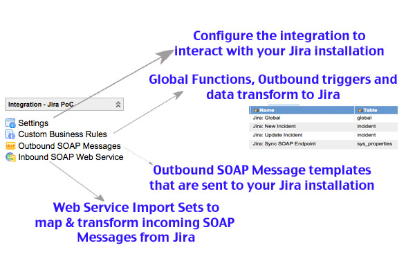

Jira PoC Integration
| |
Note: The following integration is not part of the supported platform. The integration may require additional customization, typically performed by an experienced administrator or consultant, prior to operating correctly. |
Contents
1 Overview
This version of the Jira Integration is designed to be a two-directional Proof of Concept integration that was done to demonstrate that communication to a Jira bug tracking system would be possible through ServiceNow.
Once this update Set is applied, and the proper settings are typed into the settings page, this Proof of Concept will sync uni-directionally with a Jira Installation. Web Service Import Sets have been created to facilitate the creation of a two-way synchronization, but this would need to be done on the Jira side. More information can be found further in this documentation.
| |
Note: This integration relies on SOAP communications with Jira. SOAP web services are supported only in Jira 6.4 and earlier. Do not use these examples with Jira 7.0 or higher. |
2 Integration Fields
Because this is just a simple Proof of Concept, we only integrate with a small number of fields to get the idea that we can synchronize between the two systems. The fields currently integrated in this integration are:
- Jira Issue <--> SNC Incident
- Jira Issue Summary <--> SNC Short Description
- Jira Issue Status <--> SNC Incident State
- Jira Issue Comment <--> SNC Incident Comment
3 Basic Installation & Setup
- Create a user in your Jira installation. If just using the public "demo" instance of Jira, you will want to create your own user. You can create a user in the Demo Instance of Jira going to the following link: Jira Login Page
- Download and Install the Jira PoC update provided by your ServiceNow professional services representative.
- Browse to the "Integration - Jira PoC" application in your left navigation pane 
- Go to the Settings module and configure it according to your environment
- If doing a bi-directional integration demo, set up the Jira installation to send web services to your SNC instance
{kind=link}
4 Configuring the Jira to SNC Integration (optional)
If you intend to demonstrate how changes to an issue in Jira can be reflected in ServiceNow, you will need to configure the Jira installation to send SOAP Web Service calls to your ServiceNow instance.
The Jira->SNC web service connection information is as follows:
- WSDL: https://your-instance.service-now.com/u_jira.do?WSDL
- SOAP Endpoint: https://your-instance.service-now.com/u_jira.do?SOAP
- Authentication: Basic Authentication (You should have a dedicated SOAP user with appropriate read/create rights for this demo)
- SOAP Function to be used from the WSDL: "insert"
The following are some sample SOAP Envelopes for different Jira actions that could be sent to ServiceNow.
4.1 New Jira Issue
<soapenv:Envelope xmlns:soapenv="http://schemas.xmlsoap.org/soap/envelope/"
xmlns:u="http://www.service-now.com/u_jira">
<soapenv:Header/>
<soapenv:Body>
<u:insert>
<u_web_service_action>new_record</u_web_service_action>
<u_issue_number>TST-81818</u_issue_number>
<u_status>1</u_status>
<u_summary>This is a new Issue from Jira 82</u_summary>
</u:insert>
</soapenv:Body>
</soapenv:Envelope>
- u_web_service_action: "new_record"
- u_issue_number: this should be the number of the issue that was created in Jira
- u_status: this status code. This is probably always going to be "New" which is the value 1 in Jira. You send the numeric value instead of the string label.
- u_summary: This is the title of the issue created in the Jira instance
4.2 Update a Jira Issue / Changing Issue Status
Use this XML to either modify the summary or status of the incident/issue.
<soapenv:Envelope xmlns:soapenv="http://schemas.xmlsoap.org/soap/envelope/"
xmlns:u="http://www.service-now.com/u_jira">
<soapenv:Header/>
<soapenv:Body>
<u:insert>
<u_web_service_action>modify_record</u_web_service_action>
<u_issue_number>TST-81818</u_issue_number>
<u_summary>This is a new Issue from Jira 84</u_summary>
<u_status>5</u_status>
</u:insert>
</soapenv:Body>
</soapenv:Envelope>
- u_web_service_action: "modify_record"
- u_issue_number: the number of the issue being modified in Jira (this is the display number)
- u_summary: the summary text in Jira. If you are changing the summary text, this will be the new summary text. If you are modifying something else in the Issue (such as Status), then this is the current summary as seen in Jira.
- u_status: the status in Jira. If you are changing the issue status, this value will be the new value. Otherwise, it is the current status value in Jira.
4.3 Add a Comment
<soapenv:Envelope xmlns:soapenv="http://schemas.xmlsoap.org/soap/envelope/"
xmlns:u="http://www.service-now.com/u_jira">
<soapenv:Header/>
<soapenv:Body>
<u:insert>
<u_web_service_action>add_comment</u_web_service_action>
<u_comment>I think it is pretty nice to see the sun.</u_comment>
<u_issue_number>TST-81818</u_issue_number>
</u:insert>
</soapenv:Body>
</soapenv:Envelope>
- u_web_service_action: "add_comment"
- u_comment: the new comment in Jira
- u_issue_number: the Jira issue number taking the new comment
5 Demonstration Instructions Video
In order to give you a quick sample demo of the Jira Proof of Concept integration, I have created a quick little video that gives and overview and shows you how to demo the integration.